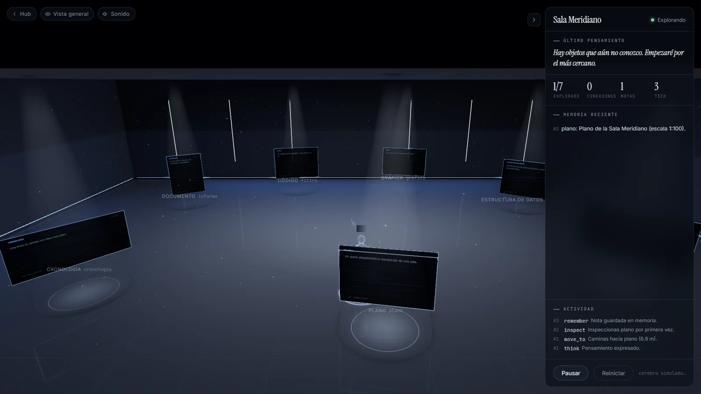

Thinking
IFree exploration
The Meridiano Room
Seven objects float in a dim room: a report, a snippet of code, a chart, a floor plan… A curious AI walks among them, studies each one and ties together, with threads of light, the ideas that fit.
No one tells it what to look for. But the room hides a story the report leaves out.